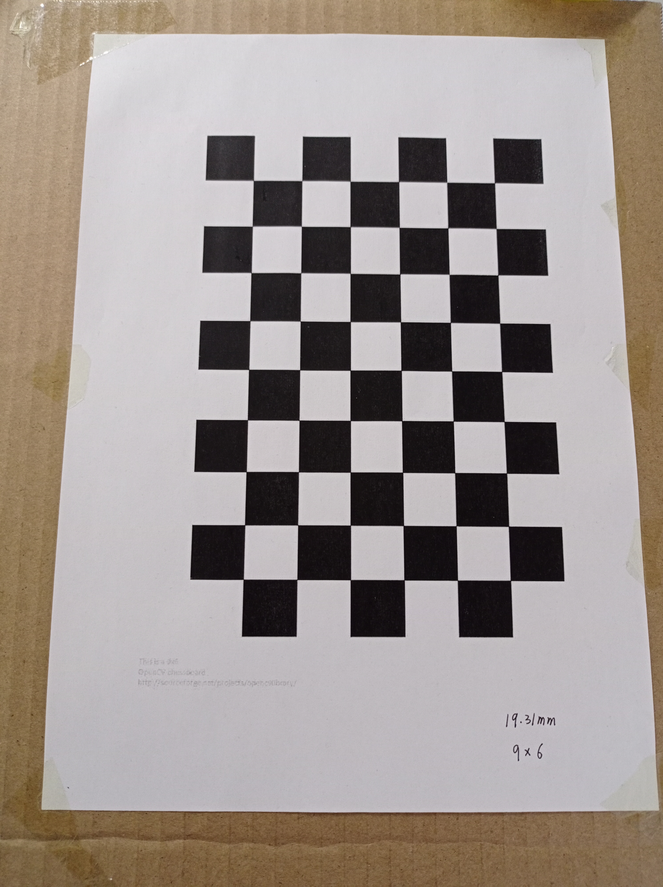

软件¶
prometheus T265驱动librealsense及对应ROS功能包 单目摄像头驱动及对应ROS功能包
摄像头标定¶
下面是标定板样张，注意打印出来粘在硬纸板上，一定要保证整个图片在一个平面上，否则会影响标定效果。标定效果好坏会直接影响到后面摄像头对二维码位置的估计进而影响到二维码降落，所以重视标定过程。 棋盘格标定板下载地址：Chessboard
{kind=link}
首先启动相机节点，如下命令启动相机ID=0 roslaunch prometheus_detection web_cam0.launch 然后利用ros自带的标定程序对相机进行标定 rosrun camera_calibration cameracalibrator.py –size 8x6 –square 0.0245 image:=/prometheus/camera/rgb/image_raw
其中：size为标点板尺寸，square为每个方格宽度(m)，注意单位是米，image:=相机话题 如果是用我们给的标定图片并且用A4纸打印出来，则size后的值为9*6 square后面的值为0.01931
标定程序启动后，会出现如下界面 在没有标定成功之前，右边的按键都为灰色，不能点击。为了提高标定的准确性，应该让标定板出现在摄像头视野范围内的各个区域，界面右上角会提示标定进度。标定过程标定板的移动可以参考此视频：Calibrating a Monocular Camera with ROS
X:标定板在摄像头视野中的左右移动
Y:标定板在摄像头视野中的上下移动
Size:标定板在摄像头视野中的前后移动
Skew:标定板在摄像头视野中的倾斜转动
不断在视野中移动标定板，直到“CALIBRATE”按钮变色，表示标定程序的参数采集完成。点击“CALIBRATE”按钮，标定程序开始自动计算摄像头的标定参数，这个过程需要等待一段时间，界面可能会变成灰色无响应状态，注意千万不要关闭。
等待几分钟后，计算出结果会自动在终端打印出来显示，这时dispaly方框又会由黑白恢复为彩色。如下图所示
将得到的参数写入如下文件(有关目标尺度的预定义也在这个文件中)：Prometheus/Modules/object_detection/config/camera_param.yaml 具体数字对应可参考下图
二维码检测确认¶
这里我们需要来确认摄像头对二维码的位置检测是否正确 我们所使用的二维码如下

请根据自己的相机节点选择（如果是上面所用的单目摄像头，则命令如下） roslaunch prometheus_detection web_cam0.launch 运行检测节点 roslaunch prometheus_detection landpad_det.launch 查看检测效果（可视化） rqt_image_view 弹出图形界面后，选择对应要显示的图像消息，选择下面红框内的这个消息可以既显示出图像又显示出二维码检测结果。
点击后在显示的消息列表里选择相应的图像消息。
打印二维码实时检测结果 rostopic echo /prometheus/object_detection/landpad_det
终端上打印出的消息如下图所示：
position后面三个值分别代表摄像头检测到的二维码在摄像头坐标系下的坐标的X,Y,Z的值。我们可以移动二维码看所显示的位置值是否显示出真实实际二维码相对于摄像头的位置，如果有较大差距，需要更改摄像头配置参数文件里的参数。 yaw_error显示的是偏航，所以是可以检测出这个二维码的 X Y Z 以及偏航也就是转的角度。
如果有较大大差距 一，重新标定，修改相机参数和畸变参数 二，确认参数文件中二维码边长，降落板边长为实际的真实值（这个非常重要），如果不是，修改为真实值，否则直接影响到二维码位置估计。
实测误差如下： 单目摄像头
| 实际距离(m) | 0.8 | 1.6 | 2.4 | 3.2 | 3.44（最大距离） |
| 估计距离(m) | 0.77 | 1.55 | 2.39 | 3.28 | 3.44（最大距离） |
坐标系确认¶
关于坐标系转换的说明：
识别算法发布的目标位置位于相机坐标系（从相机往前看，物体在相机右方x为正，下方y为正，前方z为正）
首先，从相机坐标系转换至机体坐标系（从机体往前看，物体在相机前方x为正，左方y为正，上方z为正）：由于此demo相机朝下安装，且xy方向无偏移量 pos_body_frame[0] = - Detection_raw.position[1]; pos_body_frame[1] = - Detection_raw.position[0]; pos_body_frame[2] = - Detection_raw.position[2];
从机体坐标系转换至与机体固连的ENU系（原点位于质心，x轴指向yaw=0的方向，y轴指向yaw=90的方向，z轴指向上的坐标系）：直接乘上机体系到惯性系的旋转矩阵即可 R_Body_to_ENU = get_rotation_matrix(DroneState.attitude[0], *DroneState.attitude[1], *DroneState.attitude[2]); posbody_enu_frame = R_Body_to_ENU * pos_body_frame;
从与机体固连的ENU系转换至ENU系（原点位于起飞点，x轴指向yaw=0的方向，y轴指向yaw=90的方向，z轴指向上的坐标系） Detection_ENU.position[0] = drone_pos[0] + pos_body_enu_frame[0]; Detection_ENU.position[1] = drone_pos[1] + pos_body_enu_frame[1]; Detection_ENU.position[2] = drone_pos[2] + pos_body_enu_frame[2];
当二维码中心点位于摄像头图像右上方时，也就是处于第一象限时，终端打印的x坐标为正，y坐标为负，z坐标为正，代表相机坐标系正确。
安装相机到无人机机身上是，相机镜头朝向正下方，并且让相机图像上方方向（对着图像显示看，可以判断出相机哪个方向为上方）严格朝向机头方向。此时可以保证整个坐标系是正确的。 在确认摄像头坐标系正确的情况下将摄像头固定到机身上。
实飞¶
先设置一些基本参数 打开autonomous_landing.yaml文件 start_point_x start_point_y start_point_z 为设定的无人机起飞后飞到的目标点的坐标，单位是米，建议初始就设置一个比较低的高度。 kpx_land kpy_land kpz_land 为检测到二维码进行降落过程中的X Y Z方向上的比例控制参数。
设置完后，保存autonomous_landing.yaml文件
打开终端，启动命令： roslaunch prometheus_experiment prometheus_px4_realsense_autoland.launch 启动后，会弹出以下四个终端
每个界面含义如下
T265节点，看T265节点是否正常起来
这个终端打印消息代表pos_estimator和px4_sender两个节点运行正常，每隔十秒会打印一次消息。
此终端会显示出之前你在autonomous_landing.yaml中设置的参数值，检查是否正确。
依次查看各个终端是否有报错，数据是否正确
再打开一个新终端输入 rqt_image_view ，敲回车，会弹出如下图所示界面，可以查看摄像头图像。点下面红框位置选择正确的图像消息进行显示。

以上都确认没有问题之后，在下面这个终端输入1并敲回车。
先遥控器切到定点模式，然后解锁，再遥控器切到offboard模式，无人机开始起飞。注意若设定的起飞目标点不高，不要把无人机放在里二维码比较远的地方起飞，不然可能摄像头拍不到二维码。 无人机会先飞到设定的目标点，识别到二维码后会开始自动降落，如果没有识别到二维码会保持悬停。 可以手动切SWD，往上推SWD，退出offboard模式，回到定点模式，可以通过遥控器手控降落。
还需要注意降落板二维码摆放的方向，此红箭头方向是二维码正方向，起飞前尽可能让机头方向朝向二维码正方向摆放。